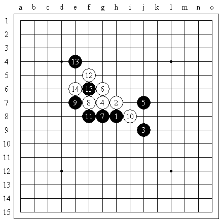
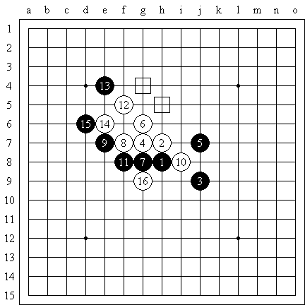
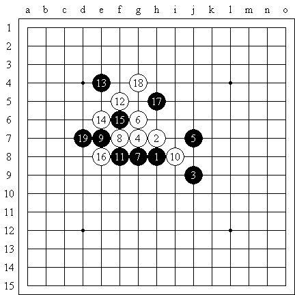
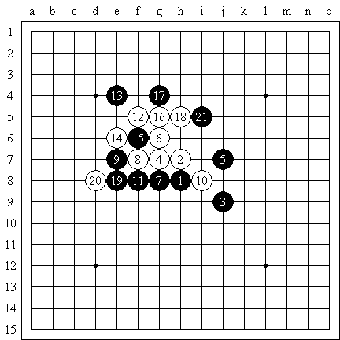

新月１４的变化
首页
江苏五子棋
#1 新月１４的变化 作者：江南新绿 发表时间：2008-9-3 13:15:53

我认为这个１５不错。

这个１５冲的变化是古老的。１８妙手。由于最后白棋上面有若干余味，黑棋不得不去不补棋。结论是黑棋不足以取胜。

明教曾经研究过这个变化。１５先活三，１７大致有两个走法，但是过程复杂无比。黑棋陷入地毯的汪洋大海。很明显的缺点是黑棋的冲偏向了角落，而结果是黑棋不能速胜，那么这个冲的方向明显就错了。

最佳１５之后主要有两个变化。
这个变化明显比上图要好，因为白棋如果去防守，９和１１的话，那么黑棋右边可以自由做一手了。

还有一个变化是这样，白棋被迫进攻，攻完就完了。
［ 有志青年 于 2008-9-4 7:49:14 时奖励此帖[金币加 20 威望加1］
#2 Re:新月１４的变化 作者：我爱老婆一生 发表时间：2008-9-4 15:29:07
学习了,谢谢
#3 Re:新月１４的变化 作者：茗弈小刀 发表时间：2008-9-4 19:32:46

#4 Re:新月１４的变化 作者：lfc 发表时间：2008-10-30 19:57:51
我来跟图！h8h9j7g9j9g10g8f9e9i8f8f11e12e10e8d8d9d10f10c9j6
#5 Re:新月１４的变化 作者：lfc 发表时间：2008-10-30 19:58:16
=======上图对应的爱五子棋谱代码如下，以便你拆解：========
h8h9j7g9j9g10g8f9e9i8f8f11e12e10e8d8d9d10f10c9j6
======================================================［ 有志青年 于 2008-10-30 20:17:17 时奖励此帖[金币加 20 威望加1］
#6 Re:新月１４的变化 作者：lfc 发表时间：2008-10-30 20:01:08
认为好就给金币吧！要不就加个威望吧！
#7 Re:新月１４的变化 作者：袜子破个洞 发表时间：2008-11-1 18:24:13
新绿这个15虽然思路挺明确。但是打谱超级困难。其实11手也可以考虑换防眠三。但是打谱也是特别困难。谁有空整出来个看看。
#8 Re:新月１４的变化 作者：战龙在野 发表时间：2008-12-10 0:05:32
好像很难下？LFC那个变化白不强
#9 Re:新月１４的变化 作者：sonix 发表时间：2010-7-12 17:13:40
=======上图对应的爱五子棋谱代码如下，以便你拆解：========
h8h9j7g9j9g10g8f9e9i8f8f11e12e10f10g11g12h11e8d8i11j8
======================================================请教这个22如何应对？
#10 Re:新月１４的变化 作者：岑小鱼 发表时间：2010-7-13 9:36:04
估计在i9补一手比较稳妥
#11 Re:Re:新月１４的变化 作者：sonix 发表时间：2010-7-13 15:14:28
引用：
原文由 岑小鱼 发表于 2010-7-13 9:36:04 :
估计在i9补一手比较稳妥
=======上图对应的爱五子棋谱代码如下，以便你拆解：========
h8h9j7g9j9g10g8f9e9i8f8f11e12e10f10g11g12h11e8d8i11j8i9g7
======================================================然后？
#12 Re:新月１４的变化 作者：岑小鱼 发表时间：2010-7-13 16:52:15
L9? 我没研究过这个 只是感觉这样好控制。。。不是说这样可以取胜哈
#13 Re:新月１４的变化 作者：sonix 发表时间：2010-7-13 17:18:27
防k8。。。。
#14 Re:Re:新月１４的变化 作者：米 发表时间：2010-7-14 11:13:32
=======上图对应的爱五子棋谱代码如下，以便你拆解：========
h8h9j7g9j9g10g8f9e9i8f8f11e12e10f10g11g12h11e8d8i11j8d11h10f12h12h13d10i12k10i9i13h5
======================================================
=======上图对应的爱五子棋谱代码如下，以便你拆解：========
h8h9j7g9j9g10g8f9e9i8f8f11e12e10f10g11g12h11e8d8i11j8d11d10k7i7h6i5i6k8j5
======================================================针对9楼的22，如果黑23走d11则黑必胜，主要变化如上。
#15 Re:新月１４的变化 作者：游戏人间 发表时间：2010-7-14 11:33:00
=======上图对应的爱五子棋谱代码如下，以便你拆解：========
h8h9j7g9j9g10g8f9e9i8f8f11e12e10f10g11g12h11e8d8i11j8d11f12
======================================================没看明白。。24这样走怎么杀的
#16 Re:Re:新月１４的变化 作者：米 发表时间：2010-7-14 12:04:43
=======上图对应的爱五子棋谱代码如下，以便你拆解：========
h8h9j7g9j9g10g8f9e9i8f8f11e12e10f10g11g12h11e8d8i11j8d11f12g7h6i9
======================================================针对楼上黑这样下必胜，然后左上通过左下的借用能出棋。
#17 Re:新月１４的变化 作者：游戏人间 发表时间：2010-7-14 12:06:12
26要先冲的
#18 Re:Re:新月１４的变化 作者：米 发表时间：2010-7-14 12:10:08
=======上图对应的爱五子棋谱代码如下，以便你拆解：========
h8h9j7g9j9g10g8f9e9i8f8f11e12e10f10g11g12h11e8d8i11j8d11f12g7i9h10h6c10b9c11d10c13
======================================================26先冲仍然贯彻左上意图，必胜路线如上。
#19 Re:Re:Re:新月１４的变化 作者：sonix 发表时间：2010-7-14 15:06:16
=======上图对应的爱五子棋谱代码如下，以便你拆解：========
h8h9j7g9j9g10g8f9e9i8f8f11e12e10f10g11g12h11e8d8i11d11e11j8i9g7
======================================================这个？
#20 Re:Re:Re:Re:新月１４的变化 作者：岑小鱼 发表时间：2010-7-14 18:14:52
厉害.....
#21 Re:新月１４的变化 作者：sonix 发表时间：2010-7-14 19:05:37
 感谢米LS.rar
感谢米LS.rar
看看22先冲吧
#22 Re:新月１４的变化 作者：霸王龙 发表时间：2010-12-7 19:03:20
估计在i9补一手比较稳妥